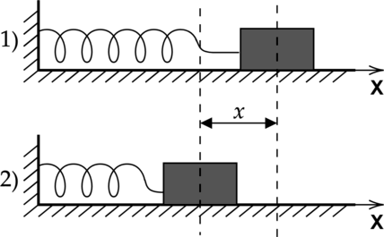
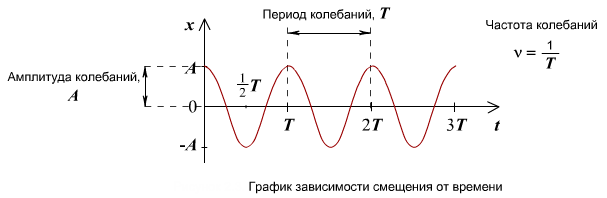
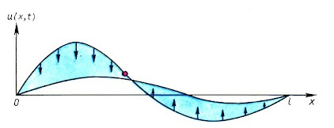
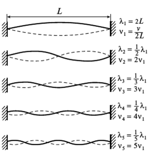

Звук - это механическое колебание, распространяющееся в газе, жидкости или твёрдом теле в виде волн. Звук представляет собой продольную волну. Колебания давления в воздухе вызывают колебания барабанной перепонки, эти колебания с помощью слуховых косточек передаются во внутреннее ухо, где преобразуются в нервные импульсы, в результате чего мы воспринимаем звук.
Механизм образования звуковой волны следующий: в результате каких-либо возмущений (например, колебания гитарной струны) возникает движение воздуха в определенной точке пространства. При движении частиц происходит их уплотнение, что приводит к избыточному давлению в этой точке. Избыточное давление приводит к вторичному движению частиц во всех направлениях - давление стремится выравняться. В результате движения происходит уплотнение следующих слоев воздуха, приводящее к избыточному давлению. Таким образом первоначальное возмущение передаётся из исходной точки во всех направлениях.
В основе многих речевых и музыкальных звуков лежат периодические колебания. Чтобы движение было колебательным, должна существовать некоторая сила, возвращающая колеблющееся тело (например, струну) в обратную сторону.
Рассмотрим самую простую колебательную модель: пружину.
Возвращающей силой в данном случае оказывается сила упругости, обратно пропорциональная расстоянию, на которое пружина была растянута относительно равновесного положения: $$F = -kx$$
По второму закону Ньютона, эта сила прямо пропрциональна ускорению, приобретаемому пружиной: $$F = -kx = ma = m \frac {{d^2}x}{dt^2}$$
$$-kx = m \frac {{d^2}x}{dt^2}$$
Получившемуся дифференциальному уравнению могут удовлетворять тригонометрические и экспоненциальные функции. Рассмотрим тригонометрическое решение:
$$x(t) = A\sin(\omega t + \varphi_0) $$(1)
Подставим это решение в полученное выше дифференциальное уравнение:
$$-k A \sin(\omega t + \varphi_0) = m \frac {{d^2}(A \sin(\omega t + \varphi_0)))}{dt^2}$$
$$-k A \sin(\omega t + \varphi_0) = -A m \omega^2 \sin(\omega t + \varphi_0)$$
$$\omega^2 = \frac km$$
Таким образом, мы находим, что $$\omega = \sqrt{\frac km}$$ - значение круговой частоты исследуемого колебания. Физический смысл круговой частоты - величина приращения фазы колебания в единицу времени. Функция, являющаяся решением нашего уравнения (синусоида) имеет длину периода, равную 2π радиан. Отсюда, угловая частота и период колебания связаны следующим образом:
$$T = \frac {2\pi}{\omega}$$
Частота колебания равна:
$$f = \frac {1}{T} = \frac {\omega}{2\pi}$$
Простое гармоническое колебание - это колебание, определяемое формулой (1). Его параметры:
Рассмотрим более сложное колебание - колебание струны.
Колебание струны описывается волновым уравнением:
$$\rho \frac {\partial^2 U}{\partial t^2} = P \frac {\partial^2 U}{\partial x^2}$$
Здесь U - смещение точки от положения равновесия, x - координата точки, ρ - погонная плотность струны (кг/м), а P - сила натяжения струны (Н)
Скорость распространения возмущения вдоль струны здесь равна:
$$ \upsilon = \sqrt {\frac {P}{\rho}} $$
Скорость распространения возмущения тем больше, чем сильнее натянута струна, и чем меньше ее погонная плотность (то есть, чем струна тоньше).
В результате произвольного возмущения натянутой струны её точки начинают совершать колебания около своих положений равновесия. Тогда говорят, что струна совершает собственные колебания - они происходят только под действием внутренних сил системы, сил натяжения. Точки, в которых амплитуда колебания равна нулю, называются узлами. Точки, в которых амплитуда максимальна - пучностями.
Нормальные колебания - это собственные колебания струны, при которых все её точки совершают гармонические колебания. Любое собственное колебание можно представить как суперпозицию нормальных колебаний.
При возбуждении нормальных колебаний вдоль струны устанавливаются стоячие волны, причем на ее концах должны быть нули амплитуды (узлы смещения), ведь струна закреплена. Когда возмущение достигает конца струны, оно отражается и бежит в противоположном направлении.
Таким образом, в случае стоячей волны на длине струны укладывается целое число полуволн:
$$ L = n \frac{\lambda_n}{2}, n = 1, 2, 3, ...$$
Скорость распространения волны равна длине волны, умноженной на частоту.
$$ \upsilon = \lambda_n \nu_n = \frac {2L}{n} \nu_n $$
С другой стороны, для струны уже была найдена взаимосвязь скорости распространения волны с силой натяжения струны и ее погонной плотностью. Тогда:
$$ \upsilon = \frac {2L}{n} \nu_n = \sqrt {\frac {P}{\rho}}$$
Тогда,
$$ \nu_n = \frac {n}{2L}\sqrt {\frac {P}{\rho}} = \frac{n}{2} \sqrt{\frac{P}{mL}}$$
где m - масса струны, а L - её длина.
Отсюда можно сделать вывод, что более низкие ноты извлекают из длинных или тяжелых струн.
Обобщение волнового уравнения на системы больших размерностей (например, колебание мембраны в двумерном случае):
$$ \Delta U = \frac {1}{\upsilon ^2} \frac{\partial^2 U}{\partial t^2}$$ где
$$ \Delta F = \frac{\partial^2 F}{\partial x_1^2} + \frac{\partial^2 F}{\partial x_2^2} + ... + \frac{\partial^2 F}{\partial x_n^2}$$ - оператор Лапласа
В рассмотренных колебательных системах колебание совершается только в одном направлении, в них есть только одна масса или жесткость. Если же в системе будет больше параметров, число степеней свободы увеличится, а вместе с этим увличится и число собственных частот. Все реальные системы можно рассмотреть как системы с бесконечным числом степеней свободы. Такие системы называются распределенными. При колебании струны в ней возбуждаются несколько первых собственных частот, амплитуды колебания на других частотах очень малы.
Полный набор собственных частот колебательной системы с амплитудами называется амплитудным спектром. Набор собственных частот с информацией о фазах называется фазовым спектром. Низшая собственная частота называется фундаментальной или основной частотой. Собственные частоты выше фундаментальной называются обертонами. Обертоны, значения частот которых находятся в целочисленном отношении с фундаментальной частотой, называются гармониками. Фундаментальная частота является первой гармоникой.
Тембр - атрибут слухового восприятия, который позволяет слушателю определить что два звука, имеющие одинаковую высоту и громкость, отличаются друг от друга. Тембр зависит от спектра сигнала, от распределения частот в спектре и временных характеристик звука. Восприятие тембра зависит как от амплитудного спектра, так и от фазового.
При генерации искусственного сигнала, не имеющего обертонов получается плоский неживой звук. Полный, богатый тембр имеют сигналы с усиленными первыми 5-7 гармониками.
При увеличении амплитуды сигнала могут проявляться нелинейные эффекты - спектр обогатится дополнительными обертонами. К тому же, из-за нелинейности восприятия громкости звука, при увеличении громкости ярче воспринимаются высокие и низкие частоты. Поэтому, при увеличении громкости тембр кажется богаче. При повышении частоты верхние значимые обертоны попадают в высокочастотный диапазон, где их восприятие ухудшается, что приводит к обеднению тембра.